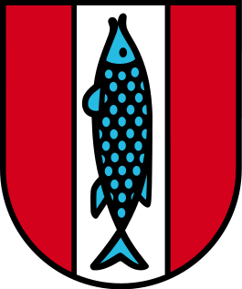

Usable UIs for Semantic Text Composition
Seed
Kaiserslautern
Kaiserslautern
is a beautiful city.

City
Kaiserslautern is a city in southwest Germany, located in the Bundesland (State) of Rhineland-Palatinate ...